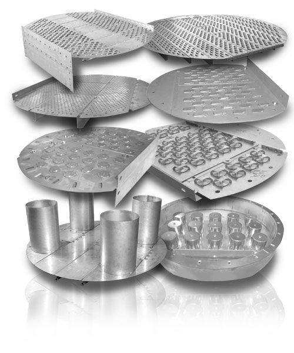

Multi-Stage Distillation: Part 03
- When performing a design of a binary distillation column we used the graphical McCabe-Thiele method.
- This involved drawing two operating lines and the $q$ -line.
- In the tutorial, the $q$ -line had a special value of $q=1$, corresponding to a liquid feed.
- Of course there are many features of the VLE data, operating lines, and $q$ -line which have physical interpretations.
- We will now look at the $q$ value and the $q$ -line in more detail.

- The $q$ -line results from a mass balance around the feed tray of the column. \begin{align*} y &= x\frac{q}{q-1} - \frac{x_F}{q-1} \end{align*}
- Remember: Constant molar overflow was assumed to derive this.
- When the feed stream enters the column it will flash to its equilibrium state at the operating pressure of the column.
- It is no coincidence then that the $q$ -line has the appearance of a flash drum operating line.
- But what exactly does the value $q$ represent?

- Initially, I described $q$ as the fraction of feed stream which remains liquid when entering the column.
- Therefore $q F$ moles of feed flow down as liquid into the stripping section of the column…
- … and $(1-q)F$ moles of feed vapourise and rise up into the enrichment section of the column (see right).
- From this we can come up with a more general definition of $q$ and $(1-q)$ as the change in the liquid and vapour flow-rates in the column relative to the feed stream flow-rate.
- This definition is important as it is possible to have $q$ -values greater than one and less than zero!

- For example, let us consider the case when the feed stream is a sub-cooled liquid at the column pressure.
- The entering feed is below its boiling point and will cause rising vapour to condense until the mixture reaches its boiling point again.
-
This will mean that the liquid flowing back down the
column will consist of:
- All of the liquid from the enrichment section.
- All of the feed stream.
- AND some fraction of the rising vapour.
- The effective value of $q$ in this case must be greater than 1!
- The counter-example is if the feed stream is superheated vapour at the column operating pressure.
- This will cause the saturated liquid on the tray to boil to vapour until the mixture reaches equilibrium.
-
This will mean that the vapour flowing up the column
will consist of:
- All of the vapour from the stripping section.
- All of the feed stream.
- AND some fraction of the falling liquid.
- The effective value of $q$ in this case must be less than 0!
-
The appearance of the
$q$
-line
can be
categorised into:
- Sub-cooled liquid feed ($q>1$).
- Saturated liquid feed ($q=1$).
- Two-phase feed ($0<q<1$).
- Saturated vapour feed ($q=0$).
- Super-heated vapour feed ($q<0$).
- We can also see that there must be limits to the values of $q$, and these correspond to complete boiling of the falling liquid phase or complete condensation of the rising vapour phase.
- Without the counter-flowing vapour and liquid phases the column cannot function and we cannot find a solution for its design.

- In case you had some difficulty plotting $q=1$ from the $q$ -line equation… \begin{align*} y &= x\frac{q}{q-1} - \frac{x_F}{q-1} \end{align*}
- … it is much more convenient to multiply the $q$ -line equation by $(q-1)$ to give \begin{align*} (q-1)y &= x q - x_F \end{align*}
- Here it is easy to see that for $q=1$ we have \begin{align*} x=x_F \end{align*} regardless of the $y$ value, so this is a vertical line!
- For $q=0$ we have \begin{align*} y=x_F \end{align*} which is a horizontal line.
- To calculate the value of $q$, we need to examine the enthalpy of the feed stream \begin{align*} q = \frac{h_{F,sat. vapour}-h_F}{h_{fg}} \end{align*} where $h_{F,vapour}$ is the specific enthalpy of a saturated vapour feed, $h_F$ is the actual specific enthalpy of the feed, and $h_{fg}$ is the latent heat of vapourisation in the column (assumed constant on a stage (good old constant molar overflow)).
- We can see that $q=1$ corresponds to $h_F=h_{F,sat. liquid}$ and $q=0$ corresponds to $h_F=h_{F,sat. vapour}$.
- But we can even calculate $q$ for sub-cooled/super-heated streams.
- The hydraulic and mechanical design of a plate distillation column is a balancing act between minimising pressure drop (operating cost), while keeping construction costs low, and avoiding weeping and entraining / flooding.
- The construction costs come about from the use of complex tray designs (see right), expensive materials, or large columns, or many trays (inefficient designs).
- Each tray type design is a trade-off between pressure drop, efficiency, cost, and liquid hold-up.

- Sieve plates (top right) are simple, cheap-to-build designs. They do not retain liquid well at low vapour flow-rates/pressure drops, but facilitate a good contact between the phases.
- Valve cap trays (middle) use small valves to improve liquid hold-up at low pressure drops/vapour flow-rates ( $1.5\times$ cost of seive plates).
- Bubble cap trays use more complex valves which can also shape the bubbles to maximise the contact between the phases, resulting in higher efficiencies ( $3\times$ cost of seive plates).
- Bubble cap trays can support very low vapour flow-rates/pressure drops due to their excellent valves, and so support high turn-down ratios.
- Chimney trays (bottom-left) are not used for mass-transfer, but are used to increase hold-up times at section of the column (usually to perform a gas-liquid separation).
- The different tray designs offer different flow characteristics in the column, but the primary concerns are efficiency, pressure drop and liquid hold-up.
- Lets take a closer look at the operation of a plate.
- In the “active area” of the plate, there is a layer of liquid which is in contact with the vapour phase.
- If the pressure drop of the vapour phase is not high enough, the hydrodynamic head of this liquid layer will be sufficient to cause liquid to weep through the plate, possibly bypassing the rest of the stage.
- In the downcomer stage, there is a head of liquid from the upper stage ready to flow on to the current plate.
- If the pressure drop is higher than the hydrodynamic head in the downcomer, the liquid in the downcomer will be blown up the column and the column will flood.

- It is possible to plot diagrams similar to the multiphase flow maps introduced in EG3019 for column operation.
- In addition to flooding and weeping, there is entrainment where the liquid is sprayed out of the column.
- Coning is where the vapour blows through the liquid phase as a cone of vapour, significantly reducing the contact time.
- The area of satisfactory operation is strongly affected by the plate design and fluid properties.
- For example, if the fluid foams excessively entrainment will become a major issue.

- We cannot discuss detailed estimates of the flooding or weeping limits of the column until a column design is chosen.
- But we cannot select a column design without a rough estimate of its operational parameters.
- To provide an initial estimate of column height, the spacing between trays is roughly estimated. Columns over 1 m in diameter have a spacing of 0.3–0.6 m (0.5 m/stage is a good initial estimate).
- The inner column diameter can be estimated by placing a limit on the superficial vapour flow rate inside the column. \begin{align*} D= \sqrt{\frac{4 \dot{V}}{\pi \rho_{vapour} \left\langle v_{vapour}\right\rangle}} \end{align*}
- An initial estimate for this superficial vapour flow rate can be obtained from empirical relations such as the one below: \begin{align*} \left\langle v_{vapour}\right\rangle^{max} = \left(-0.171 l_t^2+0.27 l_t-0.047\right)\sqrt{\frac{\rho_{liquid}-\rho_{vapour}}{\rho_{vapour}}} \end{align*} where $l_t$ is the tray spacing (0.5–1.5 m/stage).
- Obviously, this is a maximum vapour flow rate, so care must be taken to stay below this in the section of the column with the highest vapour flow rate.
- With these rough design estimates, detailed design calculations may begin.
- For more detailed design notes for plate columns, see C&R Vol. 2 Sec. 11 and Vol. 6 Sec. 11.